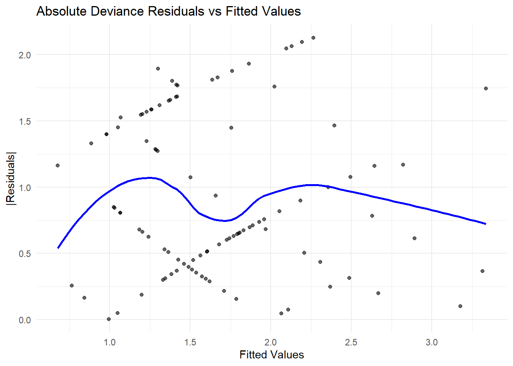

7.8 Generalization of Generalized Linear Models
We have seen that Poisson regression bears similarities to logistic regression. This insight leads us to a broader class of models known as Generalized Linear Models, introduced by Nelder and Wedderburn (1972). These models provide a unified framework for handling different types of response variables while maintaining the fundamental principles of linear modeling.
7.8.1 Exponential Family
The foundation of GLMs is built on the exponential family of distributions, which provides a flexible class of probability distributions that share a common form:
\[ f(y;\theta, \phi) = \exp\left(\frac{\theta y - b(\theta)}{a(\phi)} + c(y, \phi)\right) \]
where:
- \(\theta\) is the natural parameter (canonical parameter),
- \(\phi\) is the dispersion parameter,
- \(a(\phi)\), \(b(\theta)\), and \(c(y, \phi)\) are functions ensuring the proper distributional form.
Distributions in the Exponential Family that Can Be Used in GLMs:
Inverse Gaussian Distribution
Negative Binomial Distribution (used in GLMs but requires overdispersion adjustments)
Multinomial Distribution (for categorical response)
Exponential Family Distributions Not Commonly Used in GLMs:
Beta Distribution
Dirichlet Distribution
Wishart Distribution
Exponential Distribution (can be used indirectly through survival models)
Example: Normal Distribution
Consider a normally distributed response variable \(Y \sim N(\mu, \sigma^2)\). The probability density function (PDF) is:
\[ \begin{aligned} f(y; \mu, \sigma^2) &= \frac{1}{\sqrt{2\pi \sigma^2}} \exp\left(-\frac{(y - \mu)^2}{2\sigma^2}\right) \\ &= \exp\left(-\frac{y^2 - 2y\mu + \mu^2}{2\sigma^2} - \frac{1}{2} \log(2\pi\sigma^2)\right) \end{aligned} \]
Rewriting in exponential family form:
\[ \begin{aligned} f(y; \mu, \sigma^2) &= \exp\left(\frac{y \mu - \frac{\mu^2}{2}}{\sigma^2} - \frac{y^2}{2\sigma^2} - \frac{1}{2} \log(2\pi\sigma^2)\right) \\ &= \exp\left(\frac{\theta y - b(\theta)}{a(\phi)} + c(y, \phi)\right) \end{aligned} \]
where:
- Natural parameter: \(\theta = \mu\)
- Function \(b(\theta)\): \(b(\theta) = \frac{\mu^2}{2}\)
- Dispersion function: \(a(\phi) = \sigma^2 = \phi\)
- Function \(c(y, \phi)\): \(c(y, \phi) = -\frac{1}{2} \left(\frac{y^2}{\phi} + \log(2\pi \sigma^2)\right)\)
7.8.2 Properties of GLM Exponential Families
Expected Value (Mean) \[ E(Y) = b'(\theta) \] where \(b'(\theta) = \frac{\partial b(\theta)}{\partial \theta}\). (Note:
'is “prime,” not transpose).Variance \[ \text{Var}(Y) = a(\phi) b''(\theta) = a(\phi) V(\mu) \] where:
- \(V(\mu) = b''(\theta)\) is the variance function, though it only represents the variance when \(a(\phi) = 1\).
If \(a(\phi)\), \(b(\theta)\), and \(c(y, \phi)\) are identifiable, we can derive the expected value and variance of \(Y\).
Examples of Exponential Family Distributions
1. Normal Distribution
For a normal distribution \(Y \sim N(\mu, \sigma^2)\), the exponential family representation is:
\[ f(y; \mu, \sigma^2) = \frac{1}{\sqrt{2\pi \sigma^2}} \exp \left( -\frac{(y - \mu)^2}{2\sigma^2} \right) \]
which can be rewritten in exponential form:
\[ \exp \left( \frac{y\mu - \frac{1}{2} \mu^2}{\sigma^2} - \frac{y^2}{2\sigma^2} - \frac{1}{2} \log(2\pi\sigma^2) \right) \]
From this, we identify:
- \(\theta = \mu\)
- \(b(\theta) = \frac{\theta^2}{2}\)
- \(a(\phi) = \sigma^2\)
Computing derivatives:
\[ b'(\theta) = \frac{\partial b(\theta)}{\partial \theta} = \mu, \quad V(\mu) = b''(\theta) = 1 \]
Thus,
\[ E(Y) = \mu, \quad \text{Var}(Y) = a(\phi) V(\mu) = \sigma^2 \]
2. Poisson Distribution
For a Poisson-distributed response \(Y \sim \text{Poisson}(\mu)\), the probability mass function is:
\[ f(y; \mu) = \frac{\mu^y e^{-\mu}}{y!} \]
Rewriting in exponential form:
\[ \exp(y \log \mu - \mu - \log y!) \]
Thus, we identify:
- \(\theta = \log \mu\)
- \(b(\theta) = e^\theta\)
- \(a(\phi) = 1\)
- \(c(y, \phi) = \log y!\)
Computing derivatives:
\[ E(Y) = b'(\theta) = e^\theta = \mu, \quad \text{Var}(Y) = b''(\theta) = \mu \]
Since \(\mu = E(Y)\), we confirm the variance function:
\[ \text{Var}(Y) = V(\mu) = \mu \]
7.8.3 Structure of a Generalized Linear Model
In a GLM, we model the mean \(\mu\) through a link function that connects it to a linear predictor:
\[ g(\mu) = g(b'(\theta)) = \mathbf{x' \beta} \]
Equivalently,
\[ \mu = g^{-1}(\mathbf{x' \beta}) \]
where:
- \(g(\cdot)\) is the link function, which ensures a transformation between the expected response \(E(Y) = \mu\) and the linear predictor.
- \(\eta = \mathbf{x' \beta}\) is called the linear predictor.
7.8.4 Components of a GLM
A GLM consists of two main components:
7.8.4.1 Random Component
This describes the distribution of the response variable \(Y_1, \dots, Y_n\). The response variables are assumed to follow a distribution from the exponential family, which can be written as:
\[ f(y_i ; \theta_i, \phi) = \exp \left( \frac{\theta_i y_i - b(\theta_i)}{a(\phi)} + c(y_i, \phi) \right) \]
where:
\(Y_i\) are independent random variables.
The canonical parameter \(\theta_i\) may differ for each observation.
The dispersion parameter \(\phi\) is assumed to be constant across all \(i\).
The mean response is given by:
\[ \mu_i = E(Y_i) \]
7.8.4.2 Systematic Component
This specifies how the mean response \(\mu\) is related to the explanatory variables \(\mathbf{x}\) through a linear predictor \(\eta\):
The systematic component consists of:
- A link function \(g(\mu)\).
- A linear predictor \(\eta = \mathbf{x' \beta}\).
Notation:
We assume:
\[ g(\mu_i) = \mathbf{x' \beta} = \eta_i \]
The parameter vector \(\mathbf{\beta} = (\beta_1, \dots, \beta_p)'\) needs to be estimated.
7.8.5 Canonical Link
In a GLM, a link function \(g(\cdot)\) relates the mean \(\mu_i\) of the response \(Y_i\) to the linear predictor \(\eta_i\) via
\[ \eta_i = g(\mu_i). \]
A canonical link is a special case of \(g(\cdot)\) where
\[ g(\mu_i) = \eta_i = \theta_i, \]
and \(\theta_i\) is the natural parameter of the exponential family. In other words, the link function directly equates the linear predictor \(\eta_i\) with the distribution’s natural parameter \(\theta_i\). Hence, \(g(\mu)\) is canonical if \(g(\mu) = \theta\).
Exponential Family Components
- \(b(\theta)\): the cumulant (moment generating) function, which defines the variance function.
- \(g(\mu)\): the link function, which must be
- Monotonically increasing
- Continuously differentiable
- Invertible

For an exponential-family distribution, the function \(b(\theta)\) is called the cumulant moment generating function, and it relates \(\theta\) to the mean via its derivative:
\[ \mu = b'(\theta) \quad\Longleftrightarrow\quad \theta = b'^{-1}(\mu). \]
By defining the link so that \(g(\mu) = \theta\), we impose \(\eta_i = \theta_i\), which is why \(g(\cdot)\) is termed canonical in this setting.
When the link is canonical, an equivalent way to express this is
\[ \gamma^{-1} \circ g^{-1} = I, \]
indicating that the inverse link \(g^{-1}(\cdot)\) directly maps the linear predictor (now the natural parameter \(\theta\)) back to \(\mu\) in a way that respects the structure of the exponential family.
Choosing \(g(\cdot)\) to be canonical often simplifies mathematical derivations and computations—especially for parameter estimation—because the linear predictor \(\eta\) and the natural parameter \(\theta\) coincide. Common examples of canonical links include:
- Identity link for the normal (Gaussian) distribution
- Log link for the Poisson distribution
- Logit link for the Bernoulli (binomial) distribution
In each case, setting \(\eta = \theta\) streamlines the relationship between the mean and the linear predictor, making the model both elegant and practically convenient.
7.8.6 Inverse Link Functions
The inverse link function \(g^{-1}(\eta)\) (also called the mean function) transforms the linear predictor \(\eta\) (which can take any real value) into a valid mean response \(\mu\).
Example 1: Normal Distribution (Identity Link)
Random Component: \(Y_i \sim N(\mu_i, \sigma^2)\).
Mean Response: \(\mu_i = \theta_i\).
Canonical Link Function:
\[ g(\mu_i) = \mu_i \]
(i.e., the identity function).
Example 2: Binomial Distribution (Logit Link)
Random Component: \(Y_i \sim \text{Binomial}(n_i, p_i)\).
Mean Response:
\[ \mu_i = \frac{n_i e^{\theta_i}}{1+e^{\theta_i}} \]
Canonical Link Function:
\[ g(\mu_i) = \log \left( \frac{\mu_i}{n_i - \mu_i} \right) \]
(Logit link function).
Example 3: Poisson Distribution (Log Link)
Random Component: \(Y_i \sim \text{Poisson}(\mu_i)\).
Mean Response:
\[ \mu_i = e^{\theta_i} \]
Canonical Link Function:
\[ g(\mu_i) = \log(\mu_i) \]
(Log link function).
Example 4: Gamma Distribution (Inverse Link)
Random Component: \(Y_i \sim \text{Gamma}(\alpha, \mu_i)\).
Mean Response:
\[ \mu_i = -\frac{1}{\theta_i} \]
Canonical Link Function:
\[ g(\mu_i) = -\frac{1}{\mu_i} \]
(Inverse link function).
The following table presents common GLM link functions and their corresponding inverse functions.
\[ \begin{array}{|l|c|c|} \hline \textbf{Link} & \eta_i = g(\mu_i) & \mu_i = g^{-1}(\eta_i) \\ \hline \text{Identity} & \mu_i & \eta_i \\ \text{Log} & \log_e \mu_i & e^{\eta_i} \\ \text{Inverse} & \mu_i^{-1} & \eta_i^{-1} \\ \text{Inverse-square} & \mu_i^{-2} & \eta_i^{-1/2} \\ \text{Square-root} & \sqrt{\mu_i} & \eta_i^2 \\ \text{Logit} & \log_e \left( \frac{\mu_i}{1 - \mu_i} \right) & \frac{1}{1 + e^{-\eta_i}} \\ \text{Probit} & \Phi^{-1}(\mu_i) & \Phi(\eta_i) \\ \hline \end{array} \]
where
\(\mu_i\) is the expected value of the response.
\(\eta_i\) is the linear predictor.
\(\Phi(\cdot)\) represents the CDF of the standard normal distribution.
7.8.7 Estimation of Parameters in GLMs
The GLM framework extends Linear Regression by allowing for response variables that follow exponential family distributions.
Maximum Likelihood Estimation is used to estimate the parameters of the systematic component (\(\beta\)), providing a consistent and efficient approach. The derivation and computation processes are unified, thanks to the exponential form of the model, which simplifies mathematical treatment and implementation.
However, this unification does not extend to the estimation of the dispersion parameter (\(\phi\)), which requires separate treatment, often involving alternative estimation methods such as moment-based approaches or quasi-likelihood estimation.
In GLMs, the response variable \(Y_i\) follows an exponential family distribution characterized by the density function:
\[ f(y_i ; \theta_i, \phi) = \exp\left(\frac{\theta_i y_i - b(\theta_i)}{a(\phi)} + c(y_i, \phi) \right) \]
where:
- \(\theta_i\) is the canonical parameter.
- \(\phi\) is the dispersion parameter (which may be known or estimated separately).
- \(b(\theta_i)\) determines the mean and variance of \(Y_i\).
- \(a(\phi)\) scales the variance.
- \(c(y_i, \phi)\) ensures proper normalization.
For this family, we obtain:
- Mean of \(Y_i\): \[ E(Y_i) = \mu_i = b'(\theta_i) \]
- Variance of \(Y_i\): \[ \text{Var}(Y_i) = b''(\theta_i) a(\phi) = V(\mu_i)a(\phi) \] where \(V(\mu_i)\) is the variance function.
- Systematic component (link function): \[ g(\mu_i) = \eta_i = \mathbf{x}_i' \beta \]
The function \(g(\cdot)\) is the link function, which connects the expected response \(\mu_i\) to the linear predictor \(\mathbf{x}_i' \beta\).
For a single observation \(Y_i\), the log-likelihood function is:
\[ l_i(\beta, \phi) = \frac{\theta_i y_i - b(\theta_i)}{a(\phi)} + c(y_i, \phi) \]
For \(n\) independent observations, the total log-likelihood is:
\[ l(\beta, \phi) = \sum_{i=1}^n l_i(\beta, \phi) \]
Expanding this,
\[ l(\beta, \phi) = \sum_{i=1}^n \left( \frac{\theta_i y_i - b(\theta_i)}{a(\phi)} + c(y_i, \phi) \right). \]
To estimate \(\beta\), we maximize this log-likelihood function.
7.8.7.1 Estimation of Systematic Component (\(\beta\))
To differentiate \(l(\beta,\phi)\) with respect to \(\beta_j\), we apply the chain rule:
\[ \frac{\partial l_i(\beta,\phi)}{\partial \beta_j} = \underbrace{\frac{\partial l_i(\beta,\phi)}{\partial \theta_i}}_{\text{depends on }(y_i - \mu_i)} \times \underbrace{\frac{\partial \theta_i}{\partial \mu_i}}_{= 1/V(\mu_i)\text{ if canonical link}} \times \underbrace{\frac{\partial \mu_i}{\partial \eta_i}}_{\text{depends on the link}} \times \underbrace{\frac{\partial \eta_i}{\partial \beta_j}}_{= x_{ij}}. \]
Let us see why these four pieces appear:
\(l_i(\beta,\phi)\) depends on \(\theta_i\). So we start by computing \(\frac{\partial l_i}{\partial \theta_i}\).
\(\theta_i\) (the “natural parameter” in the exponential family) may in turn be a function of \(\mu_i\).
In canonical‐link GLMs, we often have \(\theta_i = \eta_i\).
In more general‐link GLMs,\(\theta_i\) is still some function of \(\mu_i\).
Hence we need \(\frac{\partial \theta_i}{\partial \mu_i}\).
\(\mu_i\) (the mean) is a function of the linear predictor \(\eta_i\). Typically, \(\eta_i = g(\mu_i)\) implies \(\mu_i = g^{-1}(\eta_i)\). So we need \(\frac{\partial \mu_i}{\partial \eta_i}\).
Finally, \(\eta_i = \mathbf{x}_i^\prime \beta\). So the derivative \(\frac{\partial \eta_i}{\partial \beta_j}\) is simply \(x_{ij}\), the \(j\)‐th component of the covariate vector \(\mathbf{x}_i\).
Let us look at each factor in turn.
First term:
\[ \displaystyle \frac{\partial l_i(\beta,\phi)}{\partial \theta_i} \]
Recall
\[ l_i(\theta_i,\phi) = \frac{\theta_i \,y_i - b(\theta_i)}{a(\phi)} + c(y_i,\phi). \]
- Differentiate \(\theta_i y_i - b(\theta_i)\) with respect to \(\theta_i\): \[
\frac{\partial}{\partial \theta_i} \bigl[\theta_i\,y_i - b(\theta_i)\bigr] = y_i - b'(\theta_i).
\] But by exponential‐family definitions,\(b'(\theta_i) = \mu_i\).
So that is \(y_i - \mu_i\). - Since everything is divided by \(a(\phi)\), we get \[ \frac{\partial l_i}{\partial \theta_i} = \frac{1}{a(\phi)}\,[\,y_i - \mu_i\,]. \] Hence, \[ \boxed{ \frac{\partial l_i(\beta,\phi)}{\partial \theta_i} = \frac{y_i - \mu_i}{a(\phi)}. } \]
Second term: \[ \displaystyle \frac{\partial \theta_i}{\partial \mu_i} \] 1. In an exponential family with canonical link, we have \[ \theta_i = \eta_i = \mathbf{x}_i^\prime \beta. \] Then \(\theta_i\) is actually the same as \(\eta_i\), which is the same as \(g(\mu_i)\). Recall also that if \(\mu_i = b'(\theta_i)\), then \(d\mu_i/d\theta_i = b''(\theta_i)\). But \(b''(\theta_i) = V(\mu_i)\). Hence \[ \frac{d \mu_i}{d \theta_i} = V(\mu_i) \quad\Longrightarrow\quad \frac{d \theta_i}{d \mu_i} = \frac{1}{V(\mu_i)}. \] This identity is a well‐known property of canonical links in the exponential family.
- In more general (non‐canonical) links, \(\theta_i\) may be some other smooth function of \(\mu_i\). The key idea is: if \(\mu_i = b'(\theta_i)\) but \(\eta_i \neq \theta_i\), you would have to carefully derive \(\partial \theta_i / \partial \mu_i\). Often, a canonical link is assumed to keep expressions simpler.
If we assume a canonical link throughout, then
\[ \boxed{ \frac{\partial \theta_i}{\partial \mu_i} = \frac{1}{V(\mu_i)}. } \]
Third term:
\[ \displaystyle \frac{\partial \mu_i}{\partial \eta_i} \]
Here we consider the link function \(g(\cdot)\), defined by
\[ \eta_i = g(\mu_i) \quad\Longrightarrow\quad \mu_i = g^{-1}(\eta_i). \]
For example,
- In a Bernoulli (logistic‐regression) model, \(μg(\mu) = \log\frac{\mu}{1-\mu}\). So \(\mu = g^{-1}(\eta) = \frac{1}{1+e^{-\eta}}\). Then \(\frac{d\mu}{d\eta} = \mu\,(1-\mu)\).
- For a Poisson (log) link, \(g(\mu) = \log(\mu)\). So \(\mu = e^\eta\). Then \(\frac{d\mu}{d\eta} = e^\eta = \mu\).
- For an identity link, \(g(\mu) = \mu\). Then \(\eta = \mu\) and \(\frac{d\mu}{d\eta} = 1\).
In general,
\[ \boxed{ \frac{\partial \mu_i}{\partial \eta_i} = \left.\frac{d}{d\eta}\bigl[g^{-1}(\eta)\bigr]\right|_{\eta=\eta_i} = \left(g^{-1}\right)'(\eta_i). } \]
If the link is also canonical, then typically \(\frac{\partial \mu_i}{\partial \eta_i} = V(\mu_i)\). Indeed, that is consistent with the second term result.
Fourth term:
\[ \displaystyle \frac{\partial \eta_i}{\partial \beta_j} \]
Finally, the linear predictor is
\[ \eta_i = \mathbf{x}_i^\prime \beta = \sum_{k=1}^p x_{ik}\,\beta_k. \]
Hence, the derivative of \(\eta_i\) with respect to \(\beta_j\) is simply \[ \boxed{ \frac{\partial \eta_i}{\partial \beta_j} = x_{ij}. } \]
Therefore, for the entire log‐likelihood \(l(\beta, \phi) = \sum_{i=1}^n l_i(\beta,\phi)\), we sum over \(i\): \[ \boxed{ \frac{\partial l(\beta,\phi)}{\partial \beta_j} = \sum_{i=1}^n \Bigl[ \frac{y_i - \mu_i}{a(\phi)} \times \frac{1}{V(\mu_i)} \times \frac{\partial \mu_i}{\partial \eta_i} \times x_{ij} \Bigr]. } \]
To simplify expressions, we define the weight:
\[ w_i = \left(\left(\frac{\partial \eta_i}{\partial \mu_i}\right)^2 V(\mu_i)\right)^{-1}. \]
For canonical links, this often simplifies to \(w_i = V(\mu_i)\), such as:
- Bernoulli (logit link): \(w_i = p_i(1-p_i)\).
- Poisson (log link): \(w_i = \mu_i\).
Rewriting the score function in terms of \(w_i\):
\[ \frac{\partial l(\beta,\phi)}{\partial \beta_j} = \sum_{i=1}^n \left[ \frac{y_i - \mu_i}{a(\phi)} \times w_i \times \frac{\partial \eta_i}{\partial \mu_i} \times x_{ij} \right]. \]
To use the Newton-Raphson Algorithm for estimating \(\beta\), we require the expected second derivative:
\[ - E\left(\frac{\partial^2 l(\beta,\phi)}{\partial \beta_j \partial \beta_k}\right), \]
which corresponds to the \((j,k)\)-th element of the Fisher information matrix \(\mathbf{I}(\beta)\):
\[ \mathbf{I}_{jk}(\beta) = - E\left(\frac{\partial^2 l(\beta,\phi)}{\partial \beta_j \partial \beta_k}\right) = \sum_{i=1}^n \frac{w_i}{a(\phi)}x_{ij}x_{ik}. \]
Example: Bernoulli Model with Logit Link
For a Bernoulli response with a logit link function (canonical link), we have:
\[ \begin{aligned} b(\theta) &= \log(1 + \exp(\theta)) = \log(1 + \exp(\mathbf{x'}\beta)), \\ a(\phi) &= 1, \\ c(y_i, \phi) &= 0. \end{aligned} \]
From the mean and link function:
\[ \begin{aligned} E(Y) = b'(\theta) &= \frac{\exp(\theta)}{1 + \exp(\theta)} = \mu = p, \\ \eta = g(\mu) &= \log\left(\frac{\mu}{1-\mu}\right) = \theta = \log\left(\frac{p}{1-p}\right) = \mathbf{x'}\beta. \end{aligned} \]
The log-likelihood for \(Y_i\) is:
\[ l_i (\beta, \phi) = \frac{y_i \theta_i - b(\theta_i)}{a(\phi)} + c(y_i, \phi) = y_i \mathbf{x'}_i \beta - \log(1+ \exp(\mathbf{x'}\beta)). \]
We also obtain:
\[ \begin{aligned} V(\mu_i) &= \mu_i(1-\mu_i) = p_i (1-p_i), \\ \frac{\partial \mu_i}{\partial \eta_i} &= p_i(1-p_i). \end{aligned} \]
Thus, the first derivative simplifies as:
\[ \begin{aligned} \frac{\partial l(\beta, \phi)}{\partial \beta_j} &= \sum_{i=1}^n \left[\frac{y_i - \mu_i}{a(\phi)} \times \frac{1}{V(\mu_i)}\times \frac{\partial \mu_i}{\partial \eta_i} \times x_{ij} \right] \\ &= \sum_{i=1}^n (y_i - p_i) \times \frac{1}{p_i(1-p_i)} \times p_i(1-p_i) \times x_{ij} \\ &= \sum_{i=1}^n (y_i - p_i) x_{ij} \\ &= \sum_{i=1}^n \left(y_i - \frac{\exp(\mathbf{x'}_i\beta)}{1+ \exp(\mathbf{x'}_i\beta)}\right)x_{ij}. \end{aligned} \]
The weight term in this case is:
\[ w_i = \left(\left(\frac{\partial \eta_i}{\partial \mu_i} \right)^2 V(\mu_i)\right)^{-1} = p_i (1-p_i). \]
Thus, the Fisher information matrix has elements:
\[ \mathbf{I}_{jk}(\beta) = \sum_{i=1}^n \frac{w_i}{a(\phi)} x_{ij}x_{ik} = \sum_{i=1}^n p_i (1-p_i)x_{ij}x_{ik}. \]`
The Fisher-Scoring algorithm for the Maximum Likelihood estimate of \(\mathbf{\beta}\) is given by:
\[ \left( \begin{array} {c} \beta_1 \\ \beta_2 \\ \vdots \\ \beta_p \\ \end{array} \right)^{(m+1)} = \left( \begin{array} {c} \beta_1 \\ \beta_2 \\ \vdots \\ \beta_p \\ \end{array} \right)^{(m)} + \mathbf{I}^{-1}(\mathbf{\beta}) \left( \begin{array} {c} \frac{\partial l (\beta, \phi)}{\partial \beta_1} \\ \frac{\partial l (\beta, \phi)}{\partial \beta_2} \\ \vdots \\ \frac{\partial l (\beta, \phi)}{\partial \beta_p} \\ \end{array} \right)\Bigg|_{\beta = \beta^{(m)}} \]
This is similar to the Newton-Raphson Algorithm, except that we replace the observed matrix of second derivatives (Hessian) with its expected value.
In matrix representation, the score function (gradient of the log-likelihood) is:
\[ \begin{aligned} \frac{\partial l }{\partial \beta} &= \frac{1}{a(\phi)}\mathbf{X'W\Delta(y - \mu)} \\ &= \frac{1}{a(\phi)}\mathbf{F'V^{-1}(y - \mu)} \end{aligned} \]
The expected Fisher information matrix is:
\[ \mathbf{I}(\beta) = \frac{1}{a(\phi)}\mathbf{X'WX} = \frac{1}{a(\phi)}\mathbf{F'V^{-1}F} \]
where:
- \(\mathbf{X}\) is an \(n \times p\) matrix of covariates.
- \(\mathbf{W}\) is an \(n \times n\) diagonal matrix with \((i,i)\)-th element given by \(w_i\).
- \(\mathbf{\Delta}\) is an \(n \times n\) diagonal matrix with \((i,i)\)-th element given by \(\frac{\partial \eta_i}{\partial \mu_i}\).
- \(\mathbf{F} = \frac{\partial \mu}{\partial \beta}\) is an \(n \times p\) matrix, where the \(i\)-th row is given by \(\frac{\partial \mu_i}{\partial \beta} = (\frac{\partial \mu_i}{\partial \eta_i})\mathbf{x}'_i\).
- \(\mathbf{V}\) is an \(n \times n\) diagonal matrix with \((i,i)\)-th element given by \(V(\mu_i)\).
Setting the derivative of the log-likelihood equal to zero gives the MLE equations:
\[ \mathbf{F'V^{-1}y} = \mathbf{F'V^{-1}\mu} \]
Since all components of this equation (except for \(\mathbf{y}\)) depend on \(\beta\), we solve iteratively.
Special Cases
- Canonical Link Function
If a canonical link is used, the estimating equations simplify to:
\[ \mathbf{X'y} = \mathbf{X'\mu} \]
- Identity Link Function
If the identity link is used, the estimating equation reduces to:
\[ \mathbf{X'V^{-1}y} = \mathbf{X'V^{-1}X\hat{\beta}} \]
which leads to the Generalized Least Squares estimator:
\[ \hat{\beta} = (\mathbf{X'V^{-1}X})^{-1} \mathbf{X'V^{-1}y} \]
Fisher-Scoring Algorithm in General Form
The iterative update formula for Fisher-scoring can be rewritten as:
\[ \beta^{(m+1)} = \beta^{(m)} + \mathbf{(\hat{F}'\hat{V}^{-1}\hat{F})^{-1}\hat{F}'\hat{V}^{-1}(y- \hat{\mu})} \]
Since \(\hat{F}, \hat{V}, \hat{\mu}\) depend on \(\beta\), we evaluate them at \(\beta^{(m)}\).
From an initial guess \(\beta^{(0)}\), we iterate until convergence.
Notes:
- If \(a(\phi)\) is a constant or takes the form \(m_i \phi\) with known \(m_i\), then \(\phi\) cancels from the equations, simplifying the estimation.
7.8.7.2 Estimation of Dispersion Parameter (\(\phi\))
There are two common approaches to estimating \(\phi\):
- Maximum Likelihood Estimation
The derivative of the log-likelihood with respect to \(\phi\) is:
\[ \frac{\partial l_i}{\partial \phi} = \frac{(\theta_i y_i - b(\theta_i)a'(\phi))}{a^2(\phi)} + \frac{\partial c(y_i,\phi)}{\partial \phi} \]
The MLE of \(\phi\) satisfies the equation:
\[ \frac{a^2(\phi)}{a'(\phi)}\sum_{i=1}^n \frac{\partial c(y_i, \phi)}{\partial \phi} = \sum_{i=1}^n(\theta_i y_i - b(\theta_i)) \]
Challenges:
For distributions other than the normal case, the expression for \(\frac{\partial c(y,\phi)}{\partial \phi}\) is often complicated.
Even with a canonical link function and constant \(a(\phi)\), there is no simple general expression for the expected Fisher information:
\[ -E\left(\frac{\partial^2 l}{\partial \phi^2} \right) \]
This means that the unification GLMs provide for estimating \(\beta\) does not extend as neatly to \(\phi\).
- Moment Estimation (Bias-Corrected \(\chi^2\) Method)
The MLE is not the conventional approach for estimating \(\phi\) in Generalized Linear Models.
For an exponential family distribution, the variance function is:
\[ \text{Var}(Y) = V(\mu)a(\phi) \]
This implies the following moment-based estimator:
\[ \begin{aligned} a(\phi) &= \frac{\text{Var}(Y)}{V(\mu)} = \frac{E(Y- \mu)^2}{V(\mu)} \\ a(\hat{\phi}) &= \frac{1}{n-p} \sum_{i=1}^n \frac{(y_i -\hat{\mu}_i)^2}{V(\hat{\mu}_i)} \end{aligned} \]
where \(p\) is the number of parameters in \(\beta\).
For a GLM with a canonical link function \(g(.)= (b'(.))^{-1}\):
\[ \begin{aligned} g(\mu) &= \theta = \eta = \mathbf{x'\beta} \\ \mu &= g^{-1}(\eta)= b'(\eta) \end{aligned} \]
Using this, the moment estimator for \(a(\phi) = \phi\) becomes:
\[ \hat{\phi} = \frac{1}{n-p} \sum_{i=1}^n \frac{(y_i - g^{-1}(\hat{\eta}_i))^2}{V(g^{-1}(\hat{\eta}_i))} \]
| Approach | Description | Pros | Cons |
|---|---|---|---|
| MLE | Estimates \(\phi\) by maximizing the likelihood function | Theoretically optimal | Computationally complex, lacks a general closed-form solution |
| Moment Estimation | Uses a bias-corrected \(\chi^2\) method based on residual variance | Simpler, widely used in GLMs | Not as efficient as MLE |
7.8.8 Inference
The estimated variance of \(\hat{\beta}\) is given by:
\[ \hat{\text{var}}(\beta) = a(\phi)(\mathbf{\hat{F}'\hat{V}^{-1}\hat{F}})^{-1} \]
where:
\(\mathbf{V}\) is an \(n \times n\) diagonal matrix with diagonal elements given by \(V(\mu_i)\).
\(\mathbf{F}\) is an \(n \times p\) matrix given by:
\[ \mathbf{F} = \frac{\partial \mu}{\partial \beta} \]
Since \(\mathbf{V}\) and \(\mathbf{F}\) depend on the mean \(\mu\) (and thus on \(\beta\)), their estimates \(\mathbf{\hat{V}}\) and \(\mathbf{\hat{F}}\) depend on \(\hat{\beta}\).
To test a general hypothesis:
\[ H_0: \mathbf{L\beta = d} \]
where \(\mathbf{L}\) is a \(q \times p\) matrix, we use the Wald test:
\[ W = \mathbf{(L \hat{\beta}-d)'(a(\phi)L(\hat{F}'\hat{V}^{-1}\hat{F})L')^{-1}(L \hat{\beta}-d)} \]
Under \(H_0\), the Wald statistic follows a chi-square distribution:
\[ W \sim \chi^2_q \]
where \(q\) is the rank of \(\mathbf{L}\).
Special Case: Testing a Single Coefficient
For a hypothesis of the form:
\[ H_0: \beta_j = 0 \]
the Wald test simplifies to:
\[ W = \frac{\hat{\beta}_j^2}{\hat{\text{var}}(\hat{\beta}_j)} \sim \chi^2_1 \]
asymptotically.
Another common test is the likelihood ratio test, which compares the likelihoods of a full model and a reduced model:
\[ \Lambda = 2 \big(l(\hat{\beta}_f) - l(\hat{\beta}_r)\big) \sim \chi^2_q \]
where:
- \(l(\hat{\beta}_f)\) is the log-likelihood of the full model.
- \(l(\hat{\beta}_r)\) is the log-likelihood of the reduced model.
- \(q\) is the number of constraints used in fitting the reduced model.
| Test | Pros | Cons |
|---|---|---|
| Wald Test | Easy to compute, does not require fitting two models | May perform poorly in small samples |
| Likelihood Ratio Test | More accurate, especially for small samples | Requires fitting both full and reduced models |
While the Wald test is more convenient, the likelihood ratio test is often preferred when sample sizes are small, as it tends to have better statistical properties.
7.8.9 Deviance
Deviance plays a crucial role in:
- Goodness-of-fit assessment: Checking how well a model explains the observed data.
- Statistical inference: Used in hypothesis testing, particularly likelihood ratio tests.
- Estimating dispersion parameters: Helps in refining variance estimates.
- Model comparison: Facilitates selection between competing models.
Assuming the dispersion parameter \(\phi\) is known, let:
\(\tilde{\theta}\) be the maximum likelihood estimate (MLE) under the full model.
\(\hat{\theta}\) be the MLE under the reduced model.
The likelihood ratio statistic (twice the difference in log-likelihoods) is:
\[ 2\sum_{i=1}^{n} \frac{y_i (\tilde{\theta}_i- \hat{\theta}_i)-b(\tilde{\theta}_i) + b(\hat{\theta}_i)}{a_i(\phi)} \]
For exponential family distributions, the mean parameter is:
\[ \mu = E(y) = b'(\theta) \]
Thus, the natural parameter is a function of \(\mu\):
\[ \theta = \theta(\mu) = b'^{-1}(\mu) \]
Rewriting the likelihood ratio statistic in terms of \(\mu\):
\[ 2 \sum_{i=1}^n \frac{y_i\{\theta(\tilde{\mu}_i) - \theta(\hat{\mu}_i)\} - b(\theta(\tilde{\mu}_i)) + b(\theta(\hat{\mu}_i))}{a_i(\phi)} \]
A saturated model provides the fullest possible fit, where each observation is perfectly predicted:
\[ \tilde{\mu}_i = y_i, \quad i = 1, \dots, n \]
Setting \(\tilde{\theta}_i^* = \theta(y_i)\) and \(\hat{\theta}_i^* = \theta (\hat{\mu}_i)\), the likelihood ratio simplifies to:
\[ 2 \sum_{i=1}^{n} \frac{y_i (\tilde{\theta}_i^* - \hat{\theta}_i^*) - b(\tilde{\theta}_i^*) + b(\hat{\theta}_i^*)}{a_i(\phi)} \]
Following McCullagh (2019), for \(a_i(\phi) = \phi\), we define the scaled deviance as:
\[ D^*(\mathbf{y, \hat{\mu}}) = \frac{2}{\phi} \sum_{i=1}^n \{y_i (\tilde{\theta}_i^*- \hat{\theta}_i^*) - b(\tilde{\theta}_i^*) + b(\hat{\theta}_i^*)\} \]
and the deviance as:
\[ D(\mathbf{y, \hat{\mu}}) = \phi D^*(\mathbf{y, \hat{\mu}}) \]
where:
- \(D^*(\mathbf{y, \hat{\mu}})\) is scaled deviance.
- \(D(\mathbf{y, \hat{\mu}})\) is deviance.
In some models, \(a_i(\phi) = \phi m_i\), where \(m_i\) is a known scalar that varies across observations. Then, the scaled deviance is:
\[ D^*(\mathbf{y, \hat{\mu}}) = \sum_{i=1}^n \frac{2\{y_i (\tilde{\theta}_i^*- \hat{\theta}_i^*) - b(\tilde{\theta}_i^*) + b(\hat{\theta}_i^*)\}}{\phi m_i} \]
The deviance is often decomposed into deviance contributions:
\[ D^*(\mathbf{y, \hat{\mu}}) = \sum_{i=1}^n d_i \]
where \(d_i\) is the deviance contribution from the \(i\)-th observation.
Uses of Deviance:
\(D\) is used for model selection.
\(D^*\) is used for goodness-of-fit tests, as it is a likelihood ratio statistic:
\[ D^*(\mathbf{y, \hat{\mu}}) = 2\{l(\mathbf{y,\tilde{\mu}})-l(\mathbf{y,\hat{\mu}})\} \]
- The individual deviance contributions \(d_i\) are used to form deviance residuals.
Deviance for Normal Distribution
For the normal distribution:
\[ \begin{aligned} \theta &= \mu, \\ \phi &= \sigma^2, \\ b(\theta) &= \frac{1}{2} \theta^2, \\ a(\phi) &= \phi. \end{aligned} \]
The MLEs are:
\[ \begin{aligned} \tilde{\theta}_i &= y_i, \\ \hat{\theta}_i &= \hat{\mu}_i = g^{-1}(\hat{\eta}_i). \end{aligned} \]
The deviance simplifies to:
\[ \begin{aligned} D &= 2 \sum_{i=1}^n \left(y_i^2 - y_i \hat{\mu}_i - \frac{1}{2} y_i^2 + \frac{1}{2} \hat{\mu}_i^2 \right) \\ &= \sum_{i=1}^n (y_i^2 - 2y_i \hat{\mu}_i + \hat{\mu}_i^2) \\ &= \sum_{i=1}^n (y_i - \hat{\mu}_i)^2. \end{aligned} \]
Thus, for the normal model, the deviance corresponds to the residual sum of squares.
Deviance for Poisson Distribution
For the Poisson distribution:
\[ \begin{aligned} f(y) &= \exp\{y\log(\mu) - \mu - \log(y!)\}, \\ \theta &= \log(\mu), \\ b(\theta) &= \exp(\theta), \\ a(\phi) &= 1. \end{aligned} \]
MLEs:
\[ \begin{aligned} \tilde{\theta}_i &= \log(y_i), \\ \hat{\theta}_i &= \log(\hat{\mu}_i), \\ \hat{\mu}_i &= g^{-1}(\hat{\eta}_i). \end{aligned} \]
The deviance simplifies to:
\[ \begin{aligned} D &= 2 \sum_{i = 1}^n \left(y_i \log(y_i) - y_i \log(\hat{\mu}_i) - y_i + \hat{\mu}_i \right) \\ &= 2 \sum_{i = 1}^n \left[y_i \log\left(\frac{y_i}{\hat{\mu}_i}\right) - (y_i - \hat{\mu}_i) \right]. \end{aligned} \]
The deviance contribution for each observation:
\[ d_i = 2 \left[y_i \log\left(\frac{y_i}{\hat{\mu}_i}\right) - (y_i - \hat{\mu}_i)\right]. \]
7.8.9.1 Analysis of Deviance
The Analysis of Deviance is a likelihood-based approach for comparing nested models in GLM. It is analogous to the [Analysis of Variance (ANOVA)] in linear models.
When comparing a reduced model (denoted by \(\hat{\mu}_r\)) and a full model (denoted by \(\hat{\mu}_f\)), the difference in scaled deviance follows an asymptotic chi-square distribution:
\[ D^*(\mathbf{y;\hat{\mu}_r}) - D^*(\mathbf{y;\hat{\mu}_f}) = 2\{l(\mathbf{y;\hat{\mu}_f})-l(\mathbf{y;\hat{\mu}_r})\} \sim \chi^2_q \]
where \(q\) is the difference in the number of free parameters between the two models.
This test provides a means to assess whether the additional parameters in the full model significantly improve model fit.
The dispersion parameter \(\phi\) is estimated as:
\[ \hat{\phi} = \frac{D(\mathbf{y, \hat{\mu}})}{n - p} \]
where:
- \(D(\mathbf{y, \hat{\mu}})\) is the deviance of the fitted model.
- \(n\) is the total number of observations.
- \(p\) is the number of estimated parameters.
Caution: The frequent use of \(\chi^2\) tests can be problematic due to their reliance on asymptotic approximations, especially for small samples or overdispersed data (McCullagh 2019).
7.8.9.2 Deviance Residuals
Since deviance plays a role in model evaluation, we define deviance residuals to examine individual data points. Given that the total deviance is:
\[ D = \sum_{i=1}^{n}d_i \]
the deviance residual for observation \(i\) is:
\[ r_{D_i} = \text{sign}(y_i -\hat{\mu}_i)\sqrt{d_i} \]
where:
- \(d_i\) is the deviance contribution from observation \(i\).
- The sign function preserves the direction of the residual.
To account for varying leverage, we define the standardized deviance residual:
\[ r_{s,i} = \frac{y_i -\hat{\mu}_i}{\hat{\sigma}(1-h_{ii})^{1/2}} \]
where:
- \(h_{ii}\) is the leverage of observation \(i\).
- \(\hat{\sigma}\) is an estimate of the standard deviation.
Alternatively, using the GLM hat matrix:
\[ \mathbf{H}^{GLM} = \mathbf{W}^{1/2}X(X'WX)^{-1}X'\mathbf{W}^{-1/2} \]
where \(\mathbf{W}\) is an \(n \times n\) diagonal matrix with \((i,i)\)-th element given by \(w_i\) (see Estimation of Systematic Component (\(\beta\))), we express standardized deviance residuals as:
\[ r_{s, D_i} = \frac{r_{D_i}}{\{\hat{\phi}(1-h_{ii}^{glm})\}^{1/2}} \]
where \(h_{ii}^{glm}\) is the \(i\)-th diagonal element of \(\mathbf{H}^{GLM}\).
7.8.9.3 Pearson Chi-Square Residuals
Another goodness-of-fit statistic is the Pearson Chi-Square statistic, defined as:
\[ X^2 = \sum_{i=1}^{n} \frac{(y_i - \hat{\mu}_i)^2}{V(\hat{\mu}_i)} \]
where:
- \(\hat{\mu}_i\) is the fitted mean response.
- \(V(\hat{\mu}_i)\) is the variance function of the response.
The Scaled Pearson \(\chi^2\) statistic is:
\[ \frac{X^2}{\phi} \sim \chi^2_{n-p} \]
where \(p\) is the number of estimated parameters.
The Pearson residuals are:
\[ X^2_i = \frac{(y_i - \hat{\mu}_i)^2}{V(\hat{\mu}_i)} \]
These residuals assess the difference between observed and fitted values, standardized by the variance.
If the assumptions hold:
Independent samples
No overdispersion: If \(\phi = 1\), we expect:
\[ \frac{D(\mathbf{y;\hat{\mu}})}{n-p} \approx 1, \quad \frac{X^2}{n-p} \approx 1 \]
A value substantially greater than 1 suggests overdispersion or model misspecification.
Multiple groups: If the model includes categorical predictors, separate calculations may be needed for each group.
Under these assumptions, both:
\[ \frac{X^2}{\phi} \quad \text{and} \quad D^*(\mathbf{y; \hat{\mu}}) \]
follow a \(\chi^2_{n-p}\) distribution.
set.seed(123)
n <- 100
x <- rnorm(n)
y <- rpois(n, lambda = exp(0.5 + 0.3 * x))
# Poisson response
# Fit Poisson GLM
fit <- glm(y ~ x, family = poisson(link = "log"))
# Extract deviance and Pearson residuals
deviance_residuals <- residuals(fit, type = "deviance")
pearson_residuals <- residuals(fit, type = "pearson")
# Display residual summaries
summary(deviance_residuals)
#> Min. 1st Qu. Median Mean 3rd Qu. Max.
#> -2.1286 -1.0189 -0.1441 -0.1806 0.6171 1.8942
summary(pearson_residuals)
#> Min. 1st Qu. Median Mean 3rd Qu. Max.
#> -1.505136 -0.837798 -0.140873 0.002003 0.658076 2.366618The residuals suggest a reasonably well-fitted model with a slight underprediction tendency.
No extreme deviations or severe skewness.
The largest residuals indicate potential outliers, but they are not extreme enough to immediately suggest model inadequacy.
7.8.10 Diagnostic Plots
Standardized residual plots help diagnose potential issues with model specification, such as an incorrect link function or variance structure. Common residual plots include:
Plot of Standardized Deviance Residuals vs. Fitted Values
\[ \text{plot}(r_{s, D_i}, \hat{\mu}_i) \] or
\[ \text{plot}(r_{s, D_i}, T(\hat{\mu}_i)) \] where \(T(\hat{\mu}_i)\) is a constant information scale transformation, which adjusts \(\hat{\mu}_i\) to maintain a stable variance across observations.Plot of Standardized Deviance Residuals vs. Linear Predictor
\[ \text{plot}(r_{s, D_i}, \hat{\eta}_i) \] where \(\hat{\eta}_i\) represents the linear predictor before applying the link function.
The following table summarizes the commonly used transformations \(T(\hat{\mu}_i)\) for different random components:
| Random Component | \(T(\hat{\mu}_i)\) |
|---|---|
| Normal | \(\hat{\mu}\) |
| Poisson | \(2\sqrt{\hat{\mu}}\) |
| Binomial | \(2 \sin^{-1}(\sqrt{\hat{\mu}})\) |
| Gamma | \(2 \log(\hat{\mu})\) |
| Inverse Gaussian | \(-2\hat{\mu}^{-1/2}\) |
Interpretation of Residual Plots
- Trend in residuals: Indicates an incorrect link function or an inappropriate scale transformation.
- Systematic change in residual range with \(T(\hat{\mu})\): Suggests an incorrect choice of random component—i.e., the assumed variance function does not match the data.
- Plot of absolute residuals vs. fitted values:
\[ \text{plot}(|r_{D_i}|, \hat{\mu}_i) \] This checks whether the variance function is correctly specified.
7.8.11 Goodness of Fit
To assess how well the model fits the data, we use:
For nested models, likelihood-based information criteria provide a comparison metric:
\[ \begin{aligned} AIC &= -2l(\mathbf{\hat{\mu}}) + 2p \\ AICC &= -2l(\mathbf{\hat{\mu}}) + 2p \left(\frac{n}{n-p-1} \right) \\ BIC &= -2l(\mathbf{\hat{\mu}}) + p \log(n) \end{aligned} \]
where:
- \(l(\hat{\mu})\) is the log-likelihood at the estimated parameters.
- \(p\) is the number of model parameters.
- \(n\) is the number of observations.
Important Considerations:
The same data and model structure (i.e., same link function and assumed random component distribution) must be used for comparisons.
Models can differ in number of parameters but must remain consistent in other respects.
While traditional \(R^2\) is not directly applicable to GLMs, an analogous measure is:
\[ R^2_p = 1 - \frac{l(\hat{\mu})}{l(\hat{\mu}_0)} \]
where \(l(\hat{\mu}_0)\) is the log-likelihood of a model with only an intercept.
For binary response models, a rescaled generalized \(R^2\) is often used:
\[ \bar{R}^2 = \frac{R^2_*}{\max(R^2_*)} = \frac{1-\exp\left(-\frac{2}{n}(l(\hat{\mu}) - l(\hat{\mu}_0))\right)}{1 - \exp\left(\frac{2}{n} l(\hat{\mu}_0) \right)} \]
where the denominator ensures the maximum possible \(R^2\) scaling.
7.8.12 Over-Dispersion
Over-dispersion occurs when the observed variance exceeds what the assumed model allows. This is common in Poisson and Binomial models.
Variance Assumptions for Common Random Components
| Random Component | Standard Assumption (\(\text{var}(Y)\)) | Alternative Model Allowing Over-Dispersion (\(V(\mu)\)) |
|---|---|---|
| Binomial | \(n \mu (1- \mu)\) | \(\phi n \mu (1- \mu)\), where \(m_i = n\) |
| Poisson | \(\mu\) | \(\phi \mu\) |
- By default, \(\phi = 1\), meaning the variance follows the assumed model.
- If \(\phi \neq 1\), the variance differs from the expectation:
- \(\phi > 1\): Over-dispersion (greater variance than expected).
- \(\phi < 1\): Under-dispersion (less variance than expected).
This discrepancy suggests the assumed random component distribution may be inappropriate.
To account for dispersion issues, we can:
- Choose a more flexible random component distribution
- Negative Binomial for over-dispersed Poisson data.
- Conway-Maxwell Poisson for both over- and under-dispersed count data.
- Use Mixed Models to account for random effects
- Nonlinear and Generalized Linear Mixed Models introduce random effects, which can help capture additional variance.
# Load necessary libraries
library(ggplot2)
library(MASS) # For negative binomial models
library(MuMIn) # For R^2 in GLMs
library(glmmTMB) # For handling overdispersion
# Generate Example Data
set.seed(123)
n <- 100
x <- rnorm(n)
mu <- exp(0.5 + 0.3 * x) # True mean function
y <- rpois(n, lambda = mu) # Poisson outcome
# Fit a Poisson GLM
model_pois <- glm(y ~ x, family = poisson(link = "log"))
# Compute residuals
resid_dev <- residuals(model_pois, type = "deviance")
fitted_vals <- fitted(model_pois)
# Standardized Residual Plot: Residuals vs Fitted Values
ggplot(data = data.frame(fitted_vals, resid_dev),
aes(x = fitted_vals, y = resid_dev)) +
geom_point(alpha = 0.6) +
geom_smooth(method = "loess",
color = "red",
se = FALSE) +
theme_minimal() +
labs(title = "Standardized Deviance Residuals vs Fitted Values",
x = "Fitted Values", y = "Standardized Deviance Residuals")
# Absolute Residuals vs Fitted Values (Variance Function Check)
ggplot(data = data.frame(fitted_vals, abs_resid = abs(resid_dev)),
aes(x = fitted_vals, y = abs_resid)) +
geom_point(alpha = 0.6) +
geom_smooth(method = "loess",
color = "blue",
se = FALSE) +
theme_minimal() +
labs(title = "Absolute Deviance Residuals vs Fitted Values",
x = "Fitted Values", y = "|Residuals|")
# Goodness-of-Fit Metrics
AIC(model_pois) # Akaike Information Criterion
#> [1] 322.9552
BIC(model_pois) # Bayesian Information Criterion
#> [1] 328.1655
logLik(model_pois) # Log-likelihood
#> 'log Lik.' -159.4776 (df=2)
# R-squared for GLM
r_squared <-
1 - (logLik(model_pois) / logLik(glm(y ~ 1, family = poisson)))
r_squared
#> 'log Lik.' 0.05192856 (df=2)
# Overdispersion Check
resid_pearson <- residuals(model_pois, type = "pearson")
# Estimated dispersion parameter
phi_hat <-
sum(resid_pearson ^ 2) / (n - length(coef(model_pois)))
phi_hat
#> [1] 1.055881
# If phi > 1,
# fit a Negative Binomial Model to correct for overdispersion
if (phi_hat > 1) {
model_nb <- glm.nb(y ~ x)
summary(model_nb)
}
#>
#> Call:
#> glm.nb(formula = y ~ x, init.theta = 50.70707605, link = log)
#>
#> Coefficients:
#> Estimate Std. Error z value Pr(>|z|)
#> (Intercept) 0.42913 0.08514 5.040 4.65e-07 ***
#> x 0.35262 0.08654 4.075 4.61e-05 ***
#> ---
#> Signif. codes: 0 '***' 0.001 '**' 0.01 '*' 0.05 '.' 0.1 ' ' 1
#>
#> (Dispersion parameter for Negative Binomial(50.7071) family taken to be 1)
#>
#> Null deviance: 135.71 on 99 degrees of freedom
#> Residual deviance: 118.92 on 98 degrees of freedom
#> AIC: 324.91
#>
#> Number of Fisher Scoring iterations: 1
#>
#>
#> Theta: 51
#> Std. Err.: 233
#>
#> 2 x log-likelihood: -318.906- Standardized Residuals vs. Fitted Values
If there is a clear trend in the residual plot (e.g., a curve), this suggests an incorrect link function.
If the residual spread increases with fitted values, the variance function may be misspecified.
- Absolute Residuals vs. Fitted Values
A systematic pattern (e.g., funnel shape) suggests heteroscedasticity (i.e., changing variance).
If the residuals increase with fitted values, a different variance function (e.g., Negative Binomial instead of Poisson) may be needed.
- Goodness-of-Fit Metrics
AIC/BIC: Lower values indicate a better model, but must be compared across nested models.
Log-likelihood: Higher values suggest a better-fitting model.
\(R^2\) for GLMs: Since traditional \(R^2\) is not available, the likelihood-based \(R^2\) is used to measure improvement over a null model.
- Overdispersion Check (\(\phi\))
If \(\phi \approx 1\), the Poisson assumption is valid.
If \(\phi > 1\), there is overdispersion, meaning a Negative Binomial model may be more appropriate.
If \(\phi < 1\), underdispersion is present, requiring alternative distributions like the Conway-Maxwell Poisson.